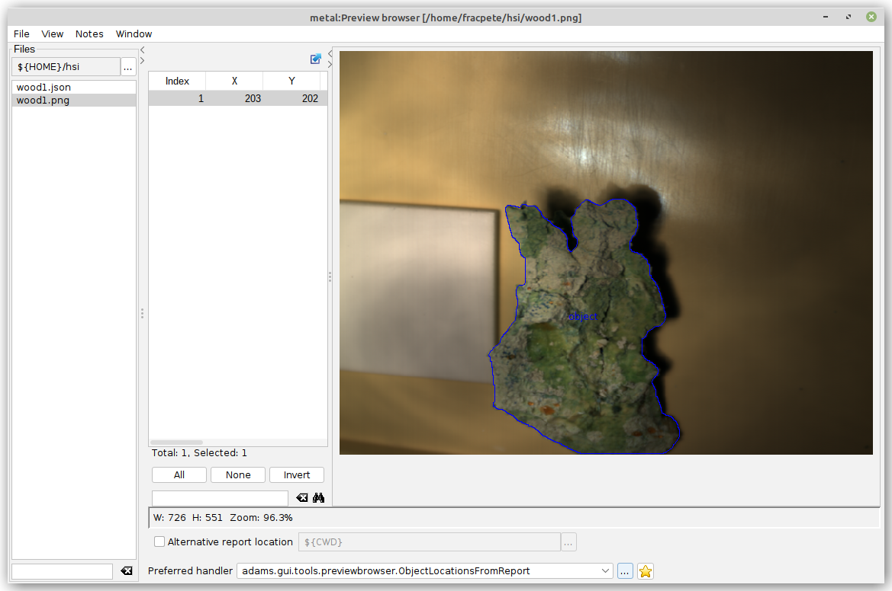
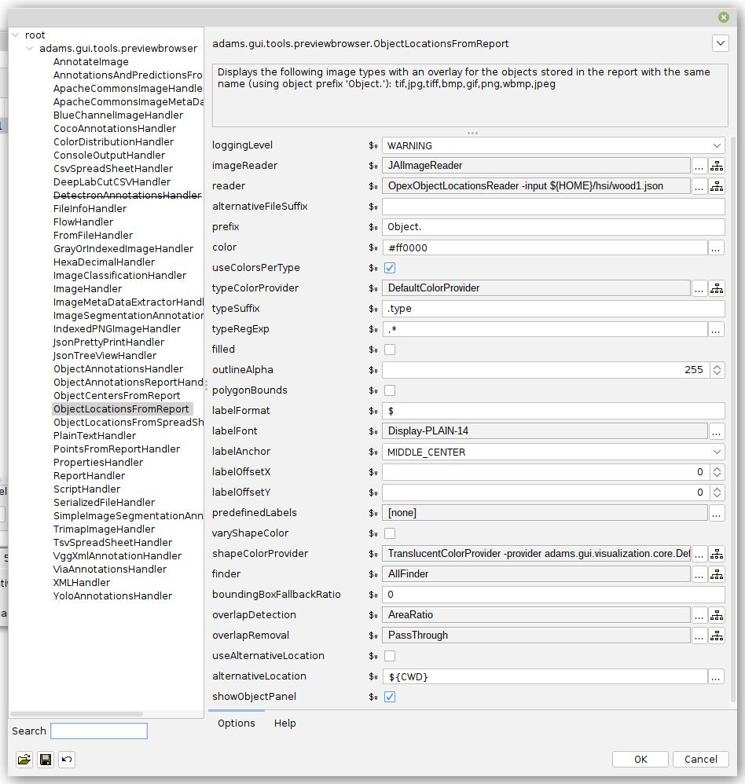

ADAMS
ADAMS-based framework that can be used for annotating images using its powerful workflow engine.
Requirements#
-
OpenJDK 11+
- Windows: adoptium.net/temurin
- Debian/Ubuntu:
sudo apt install openjdk-11-jdk
Installation#
-
Download a snapshot (in ZIP format)
-
Unzip the ZIP archive and rename the generated directory to
happy-adams
Starting the application#
-
Start the user interface with:
-
Windows:
happy-adams\bin\start_gui.bat - Linux:
happy-adams/bin/start_gui.sh
Available flows#
Of the flows that are come with the Happy ADAMS framework, the following ones are relevant to the Happy project:
adams-imaging-annotate_objects.flow- generating annotations for object detection (bounding box or polygon)adams-imaging-image_segmentation_annotation.flow- generating annotations for image segmentation (pixel-level classification)adams-imaging-ext_run-sam.flow- downloads and runs SAM (Segment Anything Model) via Docker (can be used within the above two flows as a separate annotation tool)
Tutorials#
Instructions on how to use these flows are available from the Applied Deep Learning website, specifically:
Preview browser#
The Preview browser (from the Visualization menu) can be used for viewing PNG/OPEX JSON files that were export from the happy-envi-viewer tool.
Using the ObjectLocationsFromReport with the OpexObjectLocationsReader you can generate an overlay of the annotations like this:

The options used can be seen here:

And here as a configuration setup that you can paste via the drop-down button in the top-right corner of the options dialog:
# Project: adams
# Date: 2023-08-23 16:26:05
# User: fracpete
# Charset: UTF-8
# Modules: adams-core,adams-docker,adams-imaging,adams-imaging-ext,adams-json,adams-meta,adams-net,adams-redis,adams-spreadsheet,adams-xml
#
adams.gui.tools.previewbrowser.ObjectLocationsFromReport
-image-reader
adams.data.io.input.JAIImageReader
-reader
adams.data.io.input.OpexObjectLocationsReader
-type-color-provider
adams.gui.visualization.core.DefaultColorProvider
-label-anchor
MIDDLE_CENTER
-shape-color-provider
adams.gui.visualization.core.TranslucentColorProvider
-provider
adams.gui.visualization.core.DefaultColorProvider
-finder
adams.data.objectfinder.AllFinder
-overlap-detection
adams.data.objectoverlap.AreaRatio
-overlap-removal
adams.data.overlappingobjectremoval.PassThrough
-show-object-panel
true